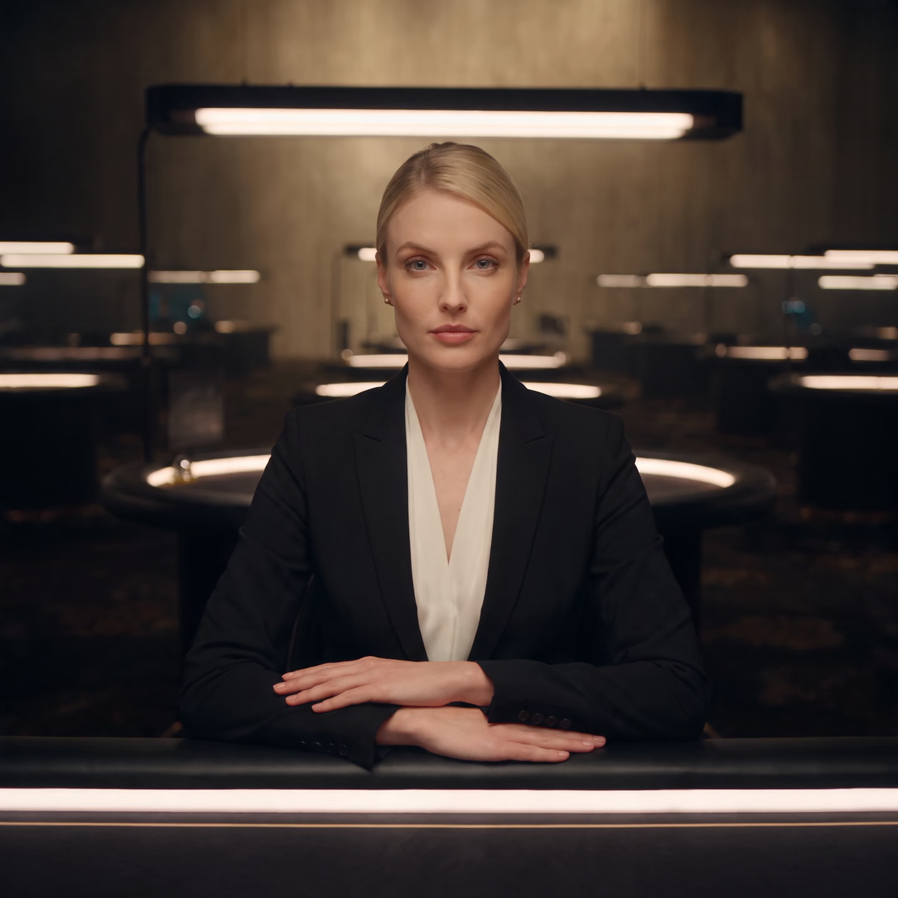

APPEARANCE FAILED · 11 SEPTEMBER 2026
This conversion does not meet Astrid’s reference.
The right image is the actual Chrome game canvas. The source model lost facial definition, hair and garment detail. The game also puts her in a hunched pose with harsh facial shading. Further rigging on this source is stopped.

Required appearance
Direct gaze, recognisable face, individual hair detail, natural suit and relaxed seated pose. Rejected Chrome render
Rejected Chrome render
Hunched pose, altered face, rigid hair mass and flat suit. This is a diagnostic capture, not an approved dealer.What must pass before more animation work
- Recognisable face, hair and clothing in a matched seated-camera render.
- Independent eyes, eyelids and mouth anatomy suitable for facial animation.
- Natural resting pose and hands that survive grip deformation without tearing.
No public/default model was changed. The source files, both rejected hand trials and this capture are preserved. Read the saved findings.